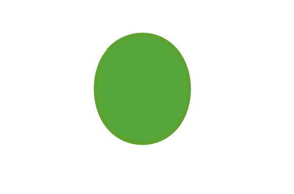
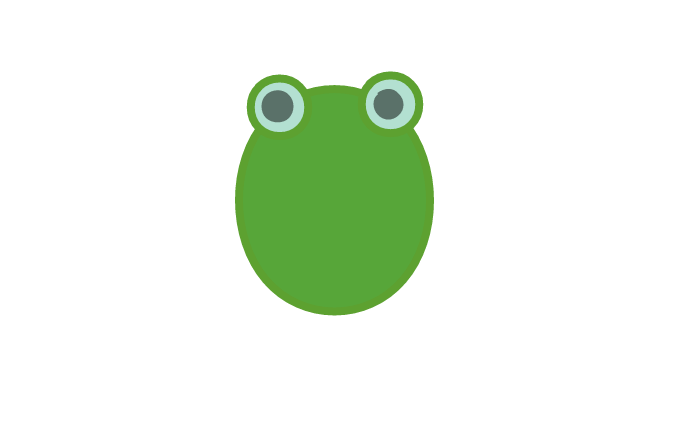
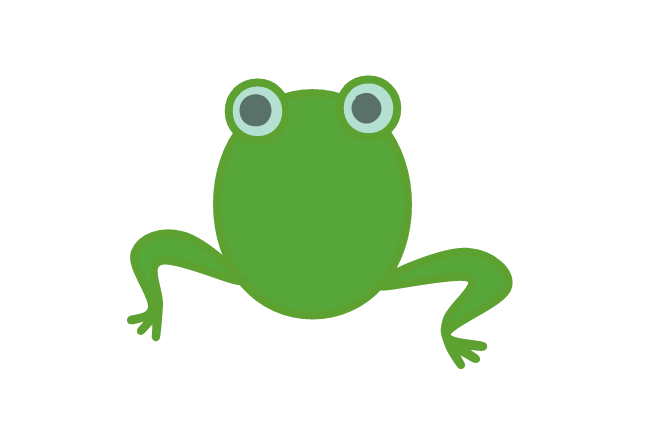
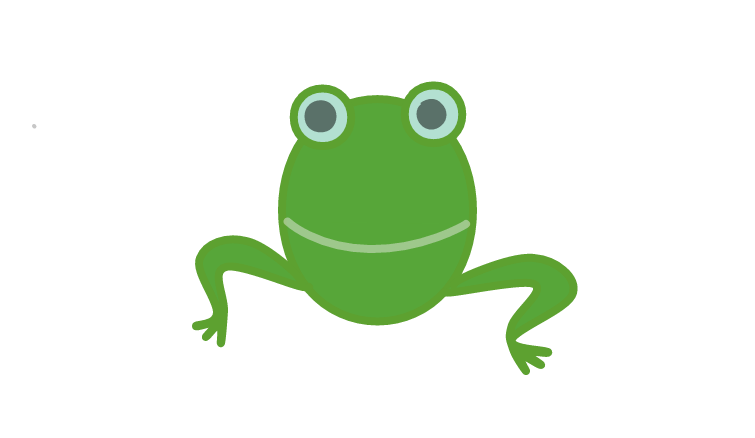
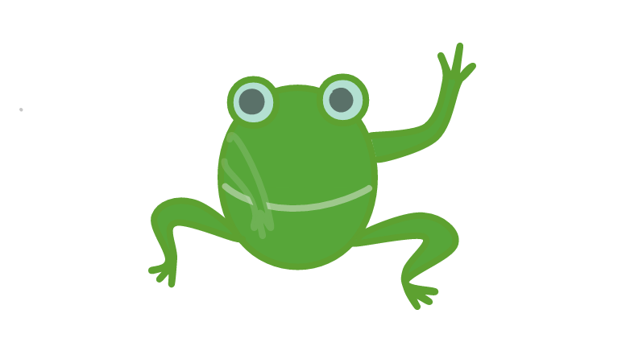

Roundraw
Срисовывая с этих схем, лягушку сможет нарисовать даже ребенок. Урок поможет вам научться рисовать лягушку, жабу и других похожих животных. Как же все таки нарисовать забавную, простую, а главное красивую лягушку?
Здесь мы расскажем о том, как быстро и легко нарисовать лягушку самостоятельно.
1. Сначала нам потребуется нарисовать туловище лягушки. это будет немного удлененный овал.
2. На этом этапе мы нарисуем глазки. Нам нужно нарисовать два маленьких круга сверху туловища. Помните, что чем больше зрачки, тем милее лягушка.
3. Сейчас нам нужно нарисовать нижние лапы лягушки. Они рисуются как часть окружности, а ласты направлены в противоположную сторону от лягушки.
4. Нарисуем лягушке улыбку. Желательно, чтобы улыбка занимала всю ширину туловища.
5. Осталось последнее - нарисовать лягушке верхние лапы. Желательно рисовать их внутри туловища. Эти лапы можно рисовать на свое усмотение.
Рисунок готов. Мы нарисовали лягушку. Свои навыки можно опробовать в нашей онлайн рисовалке.